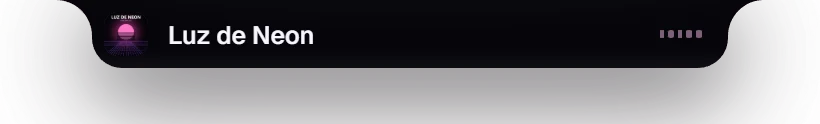
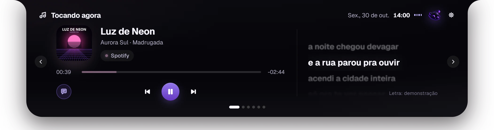
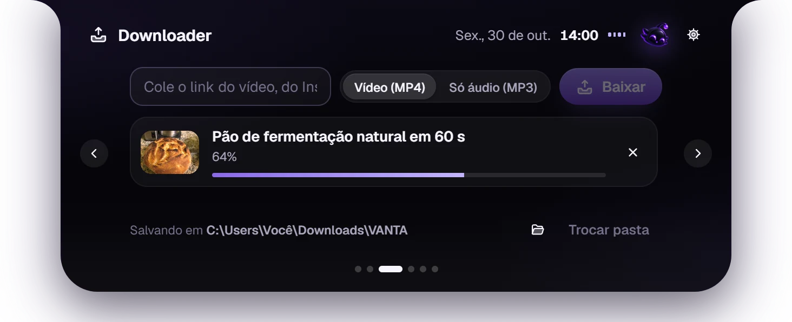
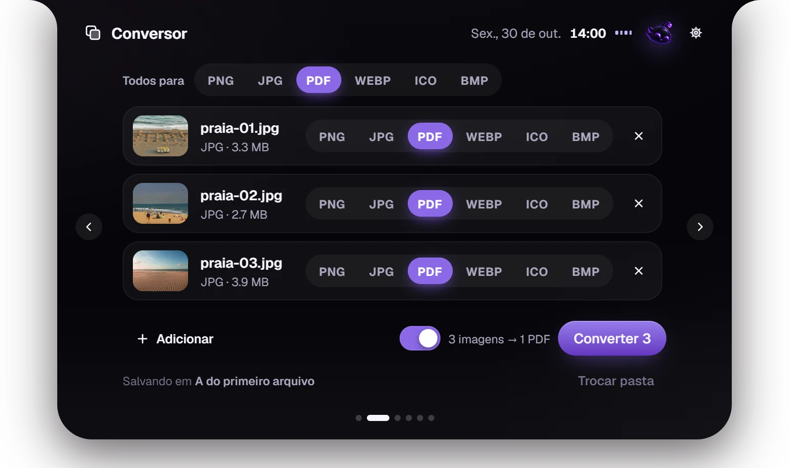
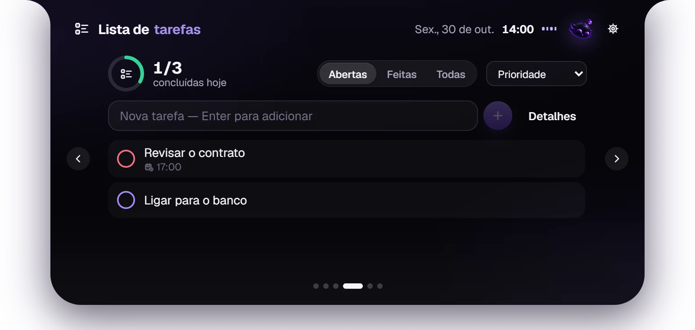
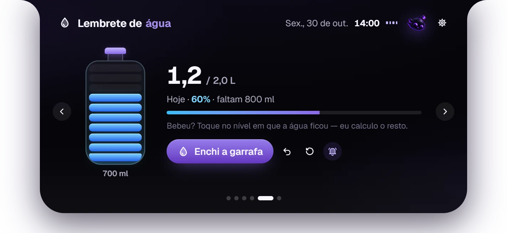

Música com a letra no tempo certo
Spotify, YouTube, Apple Music, Deezer ou qualquer player que fale com o Windows. Capa, linha do tempo, controles e a letra rolando junto com a música.
A Dynamic Island para o Windows. O que está tocando, com letra sincronizada, um conversor, downloads por link, tarefas e água, numa cápsula no topo da tela.






O que o VANTA faz
Passe o mouse, clique ou use Alt Shift Espaço. A cápsula abre, faz o que você precisa e volta a ser só um detalhe da tela.
Spotify, YouTube, Apple Music, Deezer ou qualquer player que fale com o Windows. Capa, linha do tempo, controles e a letra rolando junto com a música.
Vídeos do YouTube, TikTok, Instagram, X e Pinterest em MP4 ou só o áudio em MP3, na pasta que você quiser.
Fotos viram PDF, PDF vira imagem, vídeo vira MP3. PNG, JPG, WEBP, MP4, GIF, WAV e mais, sem sair da tela onde você está.
Prioridade, prazo e lembrete. O progresso do dia fica a um gesto de distância.
Diga o tamanho da sua garrafa e toque no nível em que a água ficou. O VANTA conta o resto e lembra você.
A extensão opcional mostra o site exato que está tocando e controla o player, no Chrome, Edge, Brave e Firefox.
O VANTA não tem login, anúncio nem telemetria. O que você cria fica no seu PC, e você apaga quando quiser.
Em 55 segundos
Quanto custa
R$ 0
Grátis, sem plano pago e sem recurso trancado. O código é aberto, sob licença MIT: dá para ler, estudar, mudar e contribuir.
Ler o código no GitHubPerguntas
Sim. Não tem versão paga, assinatura nem anúncio. O código inteiro está no GitHub sob licença MIT.
Windows 10 e Windows 11, 64 bits. A instalação é só para o seu usuário e não pede administrador. Não há versão para macOS ou Linux.
O instalador ainda não tem assinatura digital, que é um certificado pago. Por isso o SmartScreen pode mostrar o aviso: clique em Mais informações e depois em Executar assim mesmo. Se preferir, confira o código e o SHA-256 do arquivo no GitHub antes.
Para lugar nenhum. Tarefas, água e preferências ficam no seu PC. Só saem duas coisas, e só quando você usa: o nome da música, para buscar a letra no LRCLIB (dá para desligar), e o link que você mandou baixar. Detalhes na política de privacidade.
O downloader usa o yt-dlp, uma ferramenta de código aberto. Baixe apenas o que é seu, o que é livre ou o que você tem autorização para baixar. Os termos de cada site continuam valendo.
Não. Ela não rouba o foco da janela em que você está, e fora da cápsula os cliques passam direto para o app de baixo. Dá para arrastá-la para o lado por alguns segundos ou escondê-la pela bandeja.
Configurações do Windows › Aplicativos › VANTA › Desinstalar. Seus dados ficam em %APPDATA%\app.vanta.island e você escolhe se quer apagá-los.
Instale em menos de um minuto. A cápsula aparece no topo do monitor principal.
Também no GitHub Releases, com o instalador NSIS, o MSI e o SHA-256 de cada arquivo.